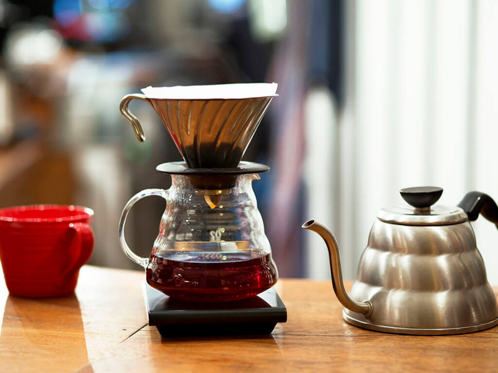

V60

El metodo de especialidad V60, es uno de mis metodos favoritos por las caracteristicas que hace que resalte de un buen café y la facilidad de preparación.
Para preparar un buen café utilizando el metodo V60, es necesario contar con lo siguiente
- Una cafetera V60
- Filtros de preferencia de papel
- Café de especialidad
- Un molino para poder moler el café y asi asegurarse de un mejor sabor y calidad
- Una balanza digital
- Una tetera cuello de cisne
- Un termotemtro para poder medir la temperatura
- Agua embotellada
Ahora los pasos a seguir
- Poner a calentar el agua a una temperatura cercana a los 85 grados centigrados
- Moler el café con una molienda semi gruesa (como granos gruesos de arena)
- Poner el filtro de papel en el V60
- Vertir agua caliente sobre el filtro, para así poder pulgrar el metodo e ir pre calentado
- Poner 30gr de café sobre el papel y tratar de nivelar o dejar una superficie plana
- Vertir 60ml de agua caliente en los primeros 30 segundos, luego vertir 100ml de agua en los siguientes 30 segundos y hacer dos vertidos de 60ml cada 30 segundos
Por ultimo servir y disfrutar de un buen café en compañia de un libro o de algún ser querido.